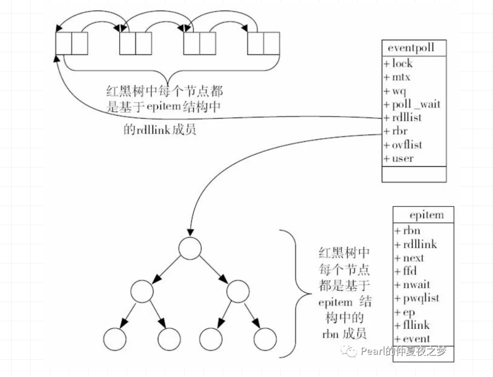
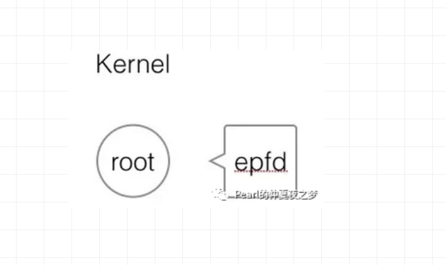
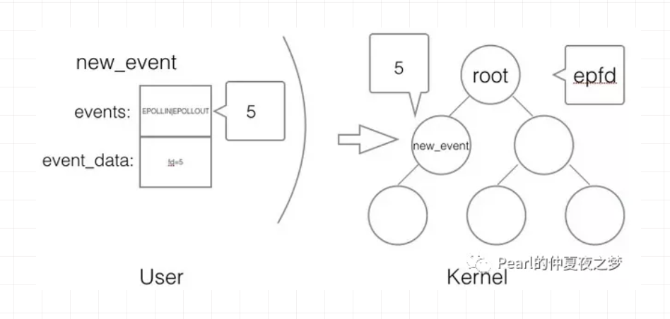
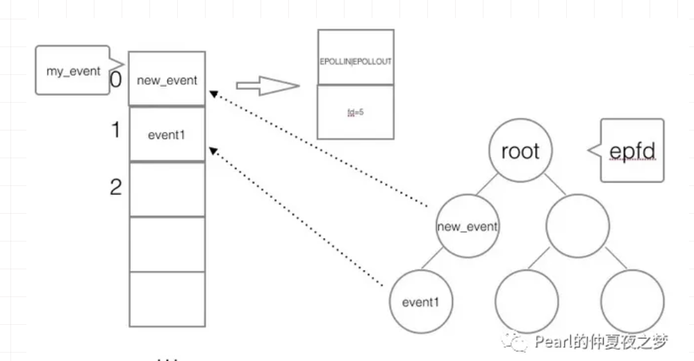
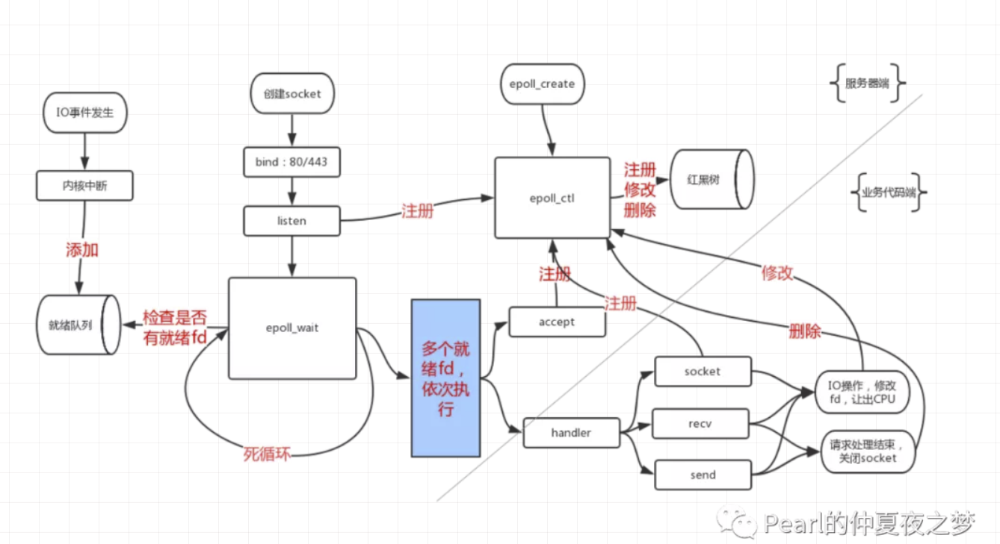

深入理解Linux IO模型(二)
原创 Pearl Pearl的仲夏夜之梦 6月13日
为何使用epollselect的缺陷epoll的提出epoll的原理数据结构实现原理高效原因epoll的API创建epoll控制epoll等待epoll使用epoll API触发方式水平触发(Level Triggered, LT)边缘触发(Edge Triggered, ET)两者对比Reference
接着前文《深入理解Linux IO模型(一)》，本文深入分析IO多路复用模型中的epoll。
- 本文为了描述方便，统一用读操作讲述，写操作同理。
- 本文为了撰写方便，统一将I/O写成了IO。
- 欢迎指正文中的错误。
为何使用epoll
Nginx在几十万并发连接下，是如何做到高效利用服务器资源的？答案是epoll。
设想一个场景：有100万用户同时与一个网络应用进程保持着TCP连接，而每一时刻只有几十或几百个TCP连接是活跃的（网络应用进程接收到TCP报文），那么在这个时刻，进程只需要处理这100万个连接中的这些活跃的连接即可。那么，内核和应用进程如何协同，才能高效地处理这种情况呢？
select的缺陷
应用进程是否在每次调用系统调用，询问内核有事件发生的TCP连接时，把这100万个连接告诉内核，由内核找出其中有事件发生的TCP连接呢？ 这正是select的做法。
select有明显的缺陷，因为这100万个TCP连接中，大部分是没有事件发生的。如果应用程序每次收集事件时，都把这100万个socket fd传给内核。有以下问题：
- 导致用户空间到内核空间的大量复制。
- 内核需要遍历所有的socket fd，判断哪些有事件到来。
- 应用进程仍需要遍历所有的socket fd，来判断哪些socket fd可读。
所以select限制了同时监听的socket fd数量，最多只能同时处理1024个并发连接。
epoll的提出
epoll在内核中申请了一片内存空间。
epoll的做法是，把应用程序的一个select调用分成三部分：
- 调用epoll_create创建一个epoll对象
- 调用epoll_ctl向epoll对象添加这100万个socket fd
- 调用epoll_wait等待收集发生事件的连接
这样，只要在应用进程启动时，建立1个epoll对象(下文用epfd表示)，并在TCP连接到来和断开的时候，对epfd添加和删除事件就可以了（也可以修改）。 应用进程调用epoll_wait时，不需要向内核空间传递这100万个连接，内核也不需要遍历全部的连接。所以epoll_wait很高效。
epoll的原理
当应用进程调用epoll_create时，内核会在内核空间创建一个独立的eventpoll结构体对象，用于维护使用epoll_ctl向其添加的事件。
数据结构
epoll的数据结构如图所示。eventpoll有两个核心的数据结构：
- 红黑树(rbr)：维护通过epoll_ctl添加的事件。
- 就绪链表(rdllist)：保存就绪的事件，当事件发生时，由内核的中断处理程序插入该就绪链表。

说明: 这张图来自于《深入理解Nginx》，网上很多博客用了这张图，但是这张图关于就绪链表的描述有个小错误。“红黑树中每个节点都是基于epitem结构中的rdllink成员"应该改成"就绪链表中每个节点都是基于epitem结构中的rdllink成员”。
1// 这里只列出了成员rbr、rdllist，它们和epoll的使用密切相关
2struct eventpoll {
3 ...
4 // 红黑树的根节点，这棵树中存储着所有添加到epoll中的事件，即这个epoll监控的事件
5 struct rb_root rbr;
6
7 // 双向链表rdllist保存着要通过epoll_wait返回给应用程序的满足条件的事件
8 struct list_head rdllist;
9 ...
10};
1struct epitem {
2 ...
3 // 红黑树节点
4 struct rb_node rbn;
5 // 双向链表节点
6 struct list_head rdllink;
7 // 事件句柄等信息
8 struct epoll_filefd ffd;
9 // 指向其所属的eventpoll对象
10 struct eventpoll *ep;
11 // 期待的事件类型
12 struct epoll_event event;
13 ...
14}
实现原理
在epoll中，为每个事件都建立一个epitem结构体对象。 这些事件都会添加到rbr红黑树中（重复添加的事件可以通过红黑树高效地识别出来）。从红黑树中查找事件非常快。
所有添加到epoll对象中的事件都会与设备驱动程序（如网卡驱动程序）建立回调关系，当相应的事件发生时，会调用回调函数（中断处理程序）。这个回调函数在内核叫ep_poll_callback，回调函数会把就绪的事件写入rdllist双向链表中。
当应用程序调用epoll_wait检查是否有事件发生的连接时，内核只是检查eventpoll对象的rdllist双向链表是否有epitem元素而已。如果rdllist链表不为空，内核把这里的事件复制到用户空间，同时返回对应的事件数量。
高效原因
最后总结分析下epoll之所以可以处理百万级别的并发连接，而且效率很高的原因。
- 应用程序在调用系统调用epoll_create创建epoll时，内核为它开辟了一片内存空间。把listen fd存在里面，以及当每次来客户端请求，三次握手后建立的client fd都会存在内核态的这个内存空间。这样不同于select，避免了用户空间和内核空间之间重复传递fd的过程。
- 应用程序要知道哪些事件可读了，不同于在select中应用程序需要主动遍历所有fd，内核只是将就绪列表中的事件复制到用户空间的event数组中（应用程序提前申请好的内存），这样应用程序只需要遍历这些就绪的事件。
- 就绪事件是怎么放入就绪列表的？答案是epoll利用了事件驱动。当数据包进入网卡，网卡将数据包通过DMA方式写入内存。网卡raise硬件中断IRQ，通知CPU有数据包到来了。CPU查询中断向量表，得到中断服务程序的指针，这个中断服务程序会调用网卡驱动程序。这里的中断服务程序是事先注册的，所以也可以理解CPU根据中断号回调中断处理程序，从内存读取数据，得到事件的fd，写入就绪列表rdllist中。
这里用到了上一篇《深入理解Linux IO模型(一)》写到的硬中断，不熟悉的可以看一下。
从程序的本质上看，程序是否有更好的并发，是看少浪费了什么。 CPU、内存、硬盘、网络带宽的利用率决定程序是不是能应对更复杂的场景。 当遇到高并发问题，怀疑程序在服务器上运转不良好时，一定要回过头看硬件有没有被充分利用，有没有浪费硬件资源。 CPU在执行什么事情的指令，决定了它的利用率。 select需要CPU在内核模式下（CPU的一种执行模式）主动去遍历所有描述符，这样CPU浪费在了遍历上。而epoll靠的是硬件中断，利用中断把就绪fd写入就绪列表。更充分发挥了硬件，不浪费CPU。这是epoll高效的最大原因。
epoll的API
epoll提供给应用程序的系统调用API有三个。
- 创建epoll：epoll_create系统调用
- 控制epoll：epoll_ctl系统调用
- 等待epoll：epoll_wait系统调用
创建epoll
创建epoll，指的是在内核空间创建一颗红黑树（平衡二叉树）的根节点root。它返回一个fd（下文用epfd指代），用来标识这个epoll对象。这个root根节点与epfd相对应。如图所示。

API如下：
1/**
2 * @param size 告诉epoll要处理的大致事件数量，而不是能处理的事件最大数量。
3 *
4 * @returns 返回一个epoll句柄（即一个文件描述符）
5 */
6int epoll_create(int size);
调用方法：
1int epfd = epoll_create(1000);
控制epoll
控制epoll，指的是以下三种操作:
- 注册新的事件到epoll
- 修改已经注册的事件
- 删除一个注册到epoll的事件
添加某事件的时候，事件被插到红黑树的某个节点，并且与相应的设备驱动程序建立回调关系。当事件发生后，内核中断处理程序调用这个回调函数，将事件添加到就绪链表。
API如下:
1/**
2* @param epfd 用epoll_create所创建的epoll实例
3* @param op 表示对epoll监控描述符控制的动作
4*
5* EPOLL_CTL_ADD(添加新的事件到epoll中)
6* EPOLL_CTL_MOD(修改已经注册到epoll中的事件)
7* EPOLL_CTL_DEL(删除epoll中的事件)
8*
9* @param fd 待监测的连接fd
10* @param event 告诉内核需要监听的事件(包括类型)，指向epoll_event的指针
11*
12* @returns 成功返回0，失败返回-1, errno查看错误信息
13*/
14int epoll_ctl(int epfd, int op, int fd,
15struct epoll_event *event);
16
17struct epoll_event {
18 __uint32_t events; // epoll 事件
19 epoll_data_t data; // 用户传递的数据
20}
21
22typedef union epoll_data {
23 void *ptr;
24 int fd; // 监听的事件fd
25 uint32_t u32;
26 uint64_t u64;
27} epoll_data_t;
关于epoll_event，具体介绍下。上文介绍过epoll为每个事件创建epitem对象，在结构体epitem中有一个成员epoll_event。
epoll_event.events的取值包括： EPOLLIN：表示对应的连接上有数据可以读出（TCP连接的远端主动关闭连接，也相当于可读事件，因为要处理发过来的FIN包） EPOLLOUT：表示对应的连接上可以写入数据发送 EPOLLRDHUP：表示TCP连接的远端关闭或半关闭连接 EPOLLPR：表示对应的链接上有紧急数据需要读 EPOLLERR：表示对应的连接发生错误 EPOLLHUP：表示对应的连接被挂起 EPOLLET：表示将处罚方式设置为边缘触发（ET），系统默认为水平触发（LT） EPOLLONESHOT：表示对这个事件只处理一次，下次需要处理时需要重新加入epoll
调用方法:
1struct epoll_event new_event;
2
3new_event.events = EPOLLIN | EPOLLOUT;
4new_event.data.fd = 5;
5
6epoll_ctl(epfd, EPOLL_CTL_ADD, 5, &new_event);
在用户空间创建一个IO事件，绑定到某个fd上，然后把该事件的fd添加到内核中的epoll红黑树中。当fd可读或可写时，触发的是epoll_event。如图所示。

等待epoll
收集在epoll监控的事件中已经发生的事件，内核会检查就绪链表中是否有存在添加过的事件，如果没有任何事件发生，最多等待timeout毫秒后返回（在timeout设置>0的情况下）。返回值表示当前发生的事件个数。
API如下:
1/**
2*
3* @param epfd 用epoll_create所创建的epoll实例
4* @param event 从内核得到的就绪的事件集合
5* @param maxevents 本次可以返回的最大事件数目，通常与预分配的event数组大小相等
6* 注意: 值不能大于创建epoll_create()时的size
7* @param timeout 等待IO事件发生的超时时间
8* -1: 永久阻塞
9* 0: 如果就绪链表rdllist为空，立即返回，不会等待，即非阻塞
10* >0: 指定最多等待的时间，单位毫秒
11*
12* @returns 成功: 有多少文件描述符就绪,时间到时返回0
13* 失败: -1, errno 查看错误
14*/
15int epoll_wait(int epfd, struct epoll_event *event,
16 int maxevents, int timeout);
注意: epoll_event不能是空指针，内核只是负责把内核空间中就绪链表的数据复制到用户空间的event数组中，不会去帮忙分配内存，所以用户空间需要自己提前分配内存。
调用方法:
1struct epoll_event my_event[1000];
2
3int event_cnt = epoll_wait(epfd, my_event, 1000, -1);
如图所示。应用程序调用epoll_wait后，进入阻塞状态。当内核检测到new_event或event1绑定的fd可读了，内核把就绪的event事件拷贝到用户空间的my_event数组。应用程序只需要遍历my_event，取出对应的事件和fd，知道是可读了，然后堵塞调用recv(fd)读数据。

使用epoll API
一个简单的使用epoll API的编程架构如下。
1// 创建epoll fd，最多可接收1000个事件
2int epfd = epoll_crete(1000);
3
4// 将listen_fd添加进epoll中
5epoll_ctl(epfd, EPOLL_CTL_ADD, listen_fd, &listen_event);
6
7while (1) {
8 // 阻塞等待epoll中的事件fd触发
9 int active_cnt = epoll_wait(epfd, events, 1000, -1);
10
11 for (i = 0 ; i < active_cnt; i++) {
12 if (evnets[i].data.fd == listen_fd) {
13 // 表示新的客户端连接请求到来
14 // 调用accept进行三次握手，创建client_fd
15 // 并将client_fd加进epoll中
16 }
17 else if (events[i].events & EPOLLIN) {
18 // 表示不是新的客户端连接，可读客户端发来的数据
19 // client_fd就绪可读，对此fd进行读操作
20 }
21 else if (events[i].events & EPOLLOUT) {
22 // 表示不是新的客户端连接，可把数据回写客户端
23 // client_fd就绪可写，对此fd进行写操作
24 }
25 }
26}
如图所示，是一个服务器使用epoll的常规流程。

触发方式
epoll有两种工作模式：水平触发和边缘触发。默认情况下，epoll采用水平触发模式。
水平触发(Level Triggered, LT)
如果应用程序阻塞在epoll_wait，当内核有事件发生的时候，内核把已经触发的事件队列复制到用户空间。如果应用程序本次没有完成读操作，下一次epoll_wait会再次返回该事件。 即只要一个事件对应的套接字缓冲区还有数据，就总能从epoll_wait中获取这个事件。
优点：事件不会丢掉，除非应用程序处理完毕。保证事件的完整性。 缺点：如果应用程序不处理这个事件，就导致内核每次都把该事件从内核空间拷贝到用户空间，系统调用消耗性能。
边缘触发(Edge Triggered, ET)
如果应用程序阻塞在epoll_wait，当内核有事件发生的时候，内核把已经触发的事件队列复制到用户空间。如果应用程序本次没有完成读操作，下一次epoll_wait不再会返回该事件。 即如果这次没有把这个事件对应的套接字缓冲区处理完，在这个套接字没有新的事件再次到来时，无法再次从epoll_wait调用中获取到这个事件。
优点：内核不会重复把该事件从内核空间拷贝到用户空间。保证性能。 缺点：如果应用程序没有处理完毕，事件会被丢掉。导致事件不完整。
两者对比
在水平触发模式下，开发基于epoll的应用要简单一些，不太容易出错。而在边缘触发模式下，当事件发生时，如果没有彻底地将缓冲区数据处理完，则会导致缓冲区中的用户请求得不到响应。
Reference
深入理解Nginx（第2版）https://book.douban.com/subject/26745255/ https://mp.weixin.qq.com/s/kWDKpgmcOQFjoBAK3LyPTg